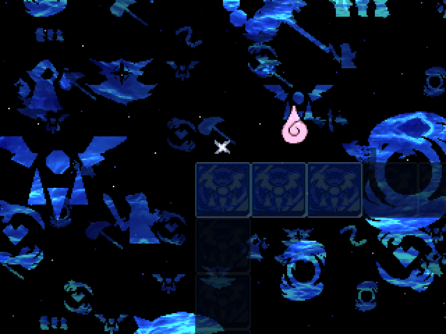
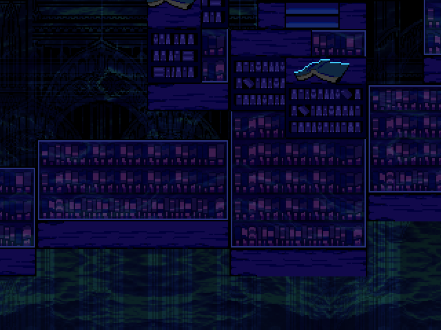
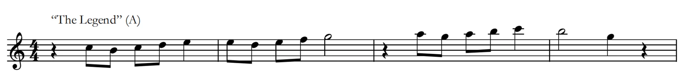
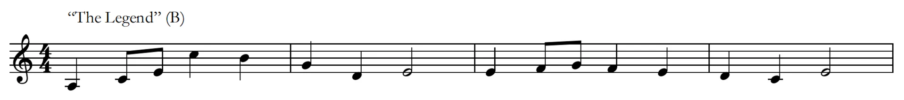
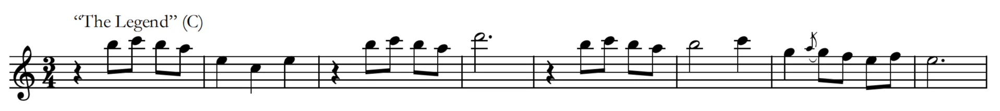
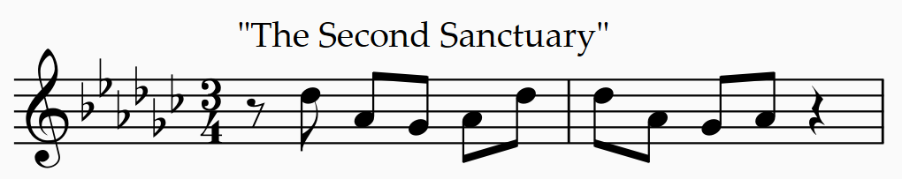

The Third Sanctuary
This track is what got people calling Toby Fox the inventor of music due to how he did the time signatures for this track. It is considered to be the longest track so far standing at 4 minutes and 7 seconds. It is the 63rd track in Deltarune chapter 3 & 4 soundtrack, has a BPM of 170, a key of E-flat minor that is tuned down by 50 cents. The time signatures are, well... Toby Fox decided that time signature was an option, as this track time signatures are:
- Alternating 4/4 and 5/4 at 0:00-0:25
- 11/8 [2+2+2+2+3] at 0:25-0:32, 0:33-1:04, & 2:03-2:44
- [3+3+3+2] at 1:47-1:58
- 2/4 at 0:32-0:33
- 10/8 [2+3+2+3] or 5/4 at 1:04-1:47 & 2:44-3:16
- 12/8 at 1:58-2:03
- Alternating 12/8 and 11/8 [2+3+3+3] at 3:16-4:07
This track have 2 leitmotif, The Legend and The Second Sanctuary.


The Legend leitmotif



6 out of 16 (including unused tracks) of the tracks that have this leitmotif are:
- "The Legend" (At 0:00-0:17 & 1:12-1:29 for part 1, 0:19-1:11 for part 2, and 1:29-1:51 for part 3):
- "My Castle Town" (At 0:21-1:03 for part 2, 1:03-1:45 for part 3 & 1:45-2:07 for part 1):
- "Castle Funk" (At 0:17-1:24 for part 2):
- "Dark Sanctuary" (At 0:30-0:38, 0:45-0:53, 1:00-1:07, & 1:16-1:22 for part 1, 1:31-1:44 for part 2):
- "The Second Sanctuary" (At 0:33-0:42, 0:50-0:59, 1:37-1:45, 1:54-2:03 for part 1, 1:14-1:21 for part 2):
- "The Third Sanctuary" (At 1:19-1:26, 2:48-2:55 for part 2):
The Second Sanctuary leitmotif

All the tracks that have this leitmotif are:
- "The Second Sanctuary" (At 0:00-1:08 & 1:28-2:11):
- "The Third Sanctuary" (At 0:00-1:05, 1:47-2:34, & 3:16-4:07):
Reference
- “Leitmotifs.” The Deltarune Wiki, 4 Apr. 2026, deltarune.wiki/w/Leitmotifs#The_Legend
- “Leitmotifs.” The Deltarune Wiki, 4 Apr. 2026, deltarune.wiki/w/Leitmotifs#The_Second_Sanctuary
- "The Third Sanctuary.” Deltarune Wiki, 28 Feb. 2026, deltarune.wiki/w/The_Third_Sanctuary.